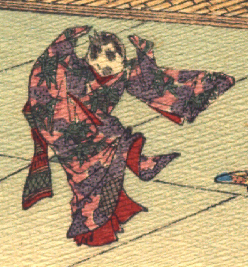

雀。桃色に紫色の模様が入った着物をまとっている。袂が長めなので娘と思われる。仰向いて両袂をあげ、体をひねり、舞っている。
出典：親書誌：U426_nichibunken_0109：Le moineau qui a la langue coupée／日付：2006／資源識別子：U426_nichibunken_0109_0004_0003
Copyright (c)2010- International Research Center for Japanese Studies, Kyoto, Japan. All rights reserved.